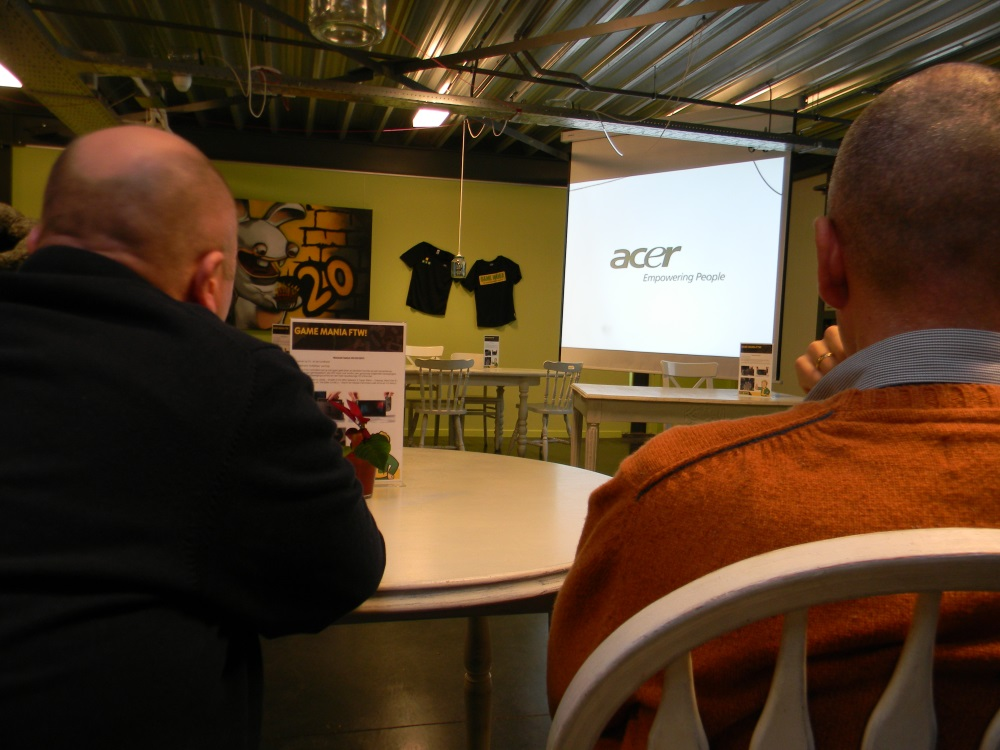
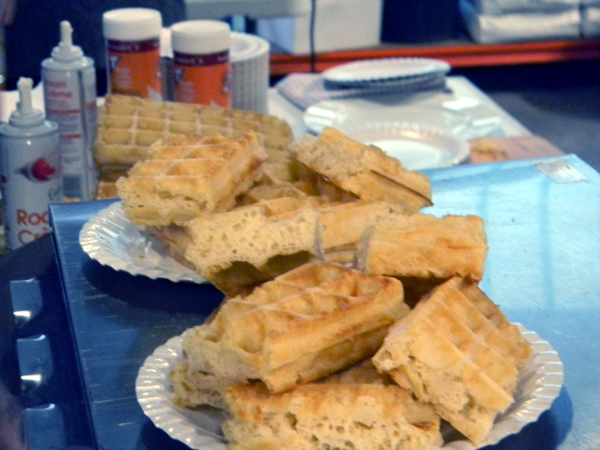
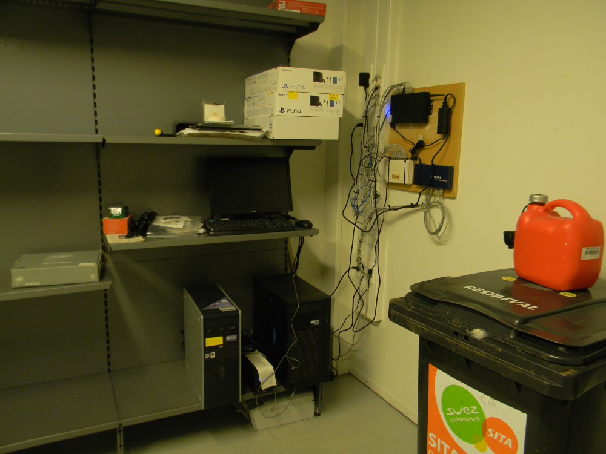
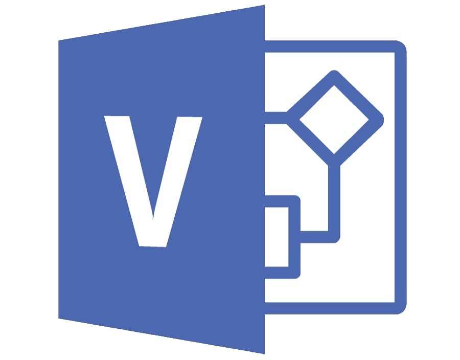
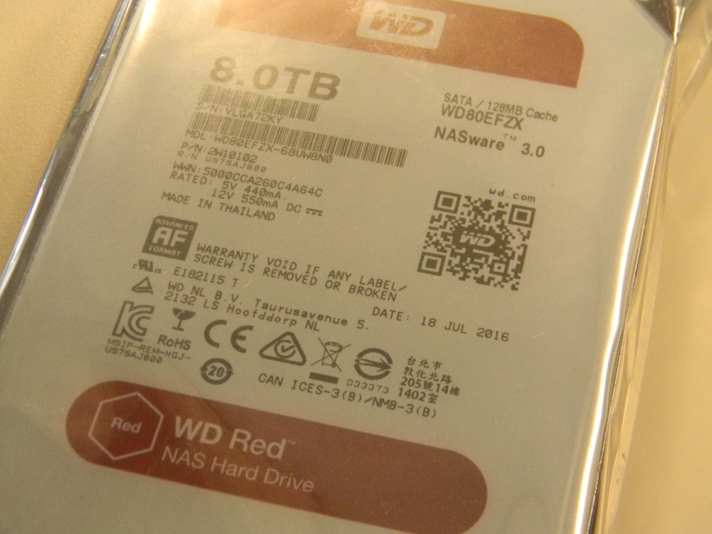
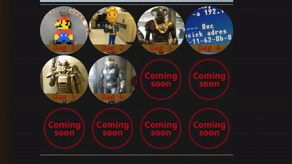
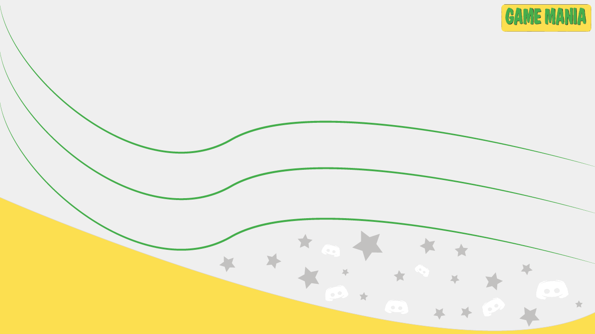

Menu
Mijn stage heb ik gedaan in het bedrijf PB Projects NV, in de onderstaande video vindt u hoe ik aan deze stageplaats ben gekomen...
Mijn stage heb ik gedaan in het bedrijf PB Projects NV, in de onderstaande video vindt u hoe ik aan deze stageplaats ben gekomen...
Ik begon maandag met een rondleiding in het gebouw, ontmoette iedereen. We bezochten het magazijn, alle kantoorkamers, mmeest opmerkelijk zijn de eetkamer en de "nep" winkel binnenin het gebouw. Hier kan men oefenen voor nieuwe strategieën.


Mijn eerste taak was een pc in elkaar te steken, er moest nog een backup-pc in elkaar worden gestoken. Dus ik heb allerlei materiaal bijeengeraapt of aangereikt gekregen en daarmee een pc gebouwd, Windows 10 geïnstalleerd.


De voor de tweede taak, bezochten eerst we de serverruimte, deze was redelijk groot in vergelijking met die van onze school. Daarna moest ik een Image klaarmaken voor nieuwe Thin Client (windows 7 embedded ipv XP embedded), de kassa's moeten hiermee vervangen worden, ik heb dan voor het grootste deel van mijn tijd registers liggen bewerken en drivers geïnstalleerd.


Coffee counter:
ik ben te lui om al dingen in mooie, eloquente zinnen te plaatsen, dus hier is een opsomming van wat ik heb gedaan vandaag:
Achtergrond voor bootscherm windows van kassa's gemaakt (photoshop en externe software)
Image gemaakt van de thin client


Harde schijven uit elkaar gehaald voor datavernietiging
HDD module in een pc geplaatst en alle data op meerdere schijven tegelijk verwijdert (datavernietiging)


Word bewerkingen van instructies ivbm thin clients (geüpdatete informatie voor windows 7)
Synology DiskStation manager experimenten voor cloud storage


Coffee counter:
verder gedaan met schijfbeheer, nog een sata schijf uit elkaar gehaald omdat die defect was.
Toen maakte ik een no-case setup om ddr2 ram te testen.


spiceworks geïnstalleerd om een duidelijke map te maken van het netwerk. spiceworks is een tool die gebruikt kan worden voor interne netwerk dingen te doen.

Axel toonde mij een bak vol met oude cpu's, ik heb ze schoongemaakt en gesorteerd op type.
Ik heb dan een pc gebouwd uit componenten die rond lagen te zwerven, een soort van test-pc.


Coffee counter:
Pc verder afgewerkt, waren fouten mee, na memtest cpu vervangen, werkte ook niet.
Met powershell een script geschreven om alle printers te pingen en in een tabel te plaatsen, dan een onderzoek gedaan naar printers met vreemd gedrag of missende info.


Via ip adres mac adres verkregen van een vermiste printer, opgezocht in de switch database.
Een redelijk nieuwe switch was ontploft, dus we hebben op een veilige manier de switch opnieuw getest, morgen vijs ik hem open om te zien wat er mis mee is.


Touchscherm is aangekomen, verder gewerkt met thinclient (drivers installeren, scherm kallibreren, nieuw image prepareren.


Coffee counter:
Vandaag heb ik vooral met software gewerkt. Ik ben begonnen met de cloud server die we hadden aangezet te updaten en wat tests te doen ivbm inter netwerk en extern netwerk.


Ook moest de ontplofte switch nog worden opengevezen, het stroomonderdeel had beschadigde condensatoren.
Daarna ben ik verder op zoek gegaan naar een goede tool voor het maken van een netwerk map. Hiervoor heb ik verscheidene software geprobeerd, zoals The Dude (RouterOS).
Na de middag werkte ik aan het overzetten van een RF unit (scanner voor in het magazijn) op een nieuw draadloos netwerk,er een nieuw statisch ip voor in te stellen, en dit te exporteren naar het flash geheugen. Daarna ben ik rond gaan lopen om de connectiviteit in het gebouw te testen met de nieuwe wi-fi verbinding.


Axel moest vroeger weggaan, dus ik heb me bezig gehouden met moederborden te testen tot ik zelf naar huis ging. Week 1 zat er op.
Coffee counter:
Mijn tweede week begon met een gids te schrijven van hoe synology cloud server op te stellen zodat dit in de toekomst kon worden herhaald.
Daarna heb ik een hele reeks harde schijven gelabeled die ik de week ervoor had laten testen.
Meer cpu's gecategoriseerd en ingepakt op type, ook opgezocht welke processoren nog een nut zouden hebben.
Nieuw image gemaakt van thin-client kassa (met touch scherm drivers).


Als laatste opdracht voor de dag was ik op zoek gegaan naar een vervanging voor hostmonitor, een tool waarmee allerlei tests kunnen worden uitgevoerd op het netwerk om problemen zo snel mogelijk te weten te komen.
Coffee counter:
Vandaag heb ik nog wat harde schijven uiteen gehaald, ook heb ik aan een meeting meegedaan ivbm telecom
Een server psu moest vervangen worden na een defect. Daarna heb ik de printernamen gecontroleerd en aangepast.
In het laatste deel van de dag heb ik aan een jaarlijkse meeting en drink meegedaan (jaaroverzicht), na de presentatie was er een tombola waarbij elke werknemer een eerlijk deel van de totale 'overschot' kreeg, dus gebruikte, maar werkende hardware, hardware die in de winkel lag, cadeautjes van zakenpartners, game publishers, ... er waren ook warme wafels en chocomelk!


Ik heb een tweetal mechanische toetsenborden meegekregen, ook een muis en een koptelefoon, allen werken ze prima.
Coffee counter:
Vandaag ben ik om 6 uur met Frank naar een winkel in Nederland vertrokken (in Goes). Deze winkel wordt afgebroken dus wij zijn er alle hardware gaan uitbouwen en hebben die dan meegenomen naar het hoofdkantoor.


+ ik heb een 8mb memory card voor de ps2 gevonden!
In de n middag heb ik een beetje leren werken met mssql management studio en NetXMS, maar ik had veel moeite met de mssql server aan de praat te krijgen.
Ik heb solarwinds gebruikt (trial) en dit leverde een halve map op als resultaat, Axel heeft daarna lantopolog gevonden en het lijkt op de beste optie momenteel om een netwerk map te maken met een tool...
Coffee counter:
We hebben de reeds bestaande netwerkmap bewerkt in Visio, up-to-date gebracht met het huidig netwerk en de voorbeeldwinkel toegevoegd aan de netwerk map.
Daarna heb ik Excel aanpassingen gemaakt aan de ip-adressen lijst en de LogMeIn informatie van alle winkels aangevuld.


Alle harde schijven zijn nu gewiped, de lade die twee weken geleden vol zat met data die niet vrij mocht komen, is nu een hoop lege magnetische platen.
Coffee counter:
Op de laatste dag heb ik de LogMeIn structuur verder bewerkt. Daarne heb ik opnames gedaan voor mijn introfilmpje.
We zijn een acces point gaan opzoeken om problemen op te lossen met de verbinding daar. De verbinding was slechts 100 Mbps power over ethernet, hoewel deze gigabit moest zijn. De oorzaak was de ethernet kabel tussen de switch en power over ethernet adapter, deze was cat 5, ipv cat 5e.
Beste Axel,
Ik wil je bedanken voor mijn twee weken stage die ik heb mogen komen doen bij jullie. Ook wil ik je bedanken voor alle hulp die ik heb gekregen. Ik kan met trots zeggen dat ik mijn eigen SQL server heb draaien op Ubuntu. Ook wil ik je bedanken voor je zieke acteerskills die je hebt getoond tijdens het maken van mijn introductiefilmpje.
Het beste tijdens mijn stage vond ik het onderzoek naar vermiste printers en vreemd gedragende repeaters. Ik heb het meeste bijgeleerd tussen de middagen wanneer iedereen heftig over politiek debatteerde. Ook was het heel fijn om een pc te bouwen uit oude onderdelen, tot deze acute ikwilnietmeeritis kreeg, waarna ik de hoop had opgegeven op enige mogelijkheid van Windows erop te installeren.
Hopelijk kunnen we af en toe eens samen gamen. Ik kijk er naar uit om je nog eens tegen te komen in de toekomst, en ik hoop dat je hetzelfde gevoel hebt.
Bedankt voor mijn trui niet te stelen en om mij een niet-werkende NES te geven. Ik heb er veel aan gehad om bij jullie stage te komen doen.
Vriendelijke groeten,
Thom Ernst
Ut enim ad minim veniam, quis nostrud exercitation ullamco laboris nisi ut aliquip ex ea commodo consequat. Duis aute irure dolor in reprehenderit in voluptate velit esse cillum dolore eu fugiat nulla ariatur. Excepteur sint occaecat cupidatat non proident, sunt in culpa qui officia deserunt mollit anim id est laborum.
 De huisstijl van PB Projects heeft een focus op grasgroen en oranjegeel, met zwart als een fijne ondertint. Ik heb me soms zelf bezig mogen houden met deze huisstijl, dus ik kan er wel wat van meespreken. Ik heb bijvoorbeeld zelf het bootscherm voor de kassa pc’s gemaakt.
De huisstijl van PB Projects heeft een focus op grasgroen en oranjegeel, met zwart als een fijne ondertint. Ik heb me soms zelf bezig mogen houden met deze huisstijl, dus ik kan er wel wat van meespreken. Ik heb bijvoorbeeld zelf het bootscherm voor de kassa pc’s gemaakt.
Ik heb ook achteraf uit een eigen artistieke drang mijn eigen variant van de oude wallpaper van Game Mania. Hier kan je duidelijk zien hoe de twee hoofdkleuren voorop springen. Het lettertype dat het meest gebruikt wordt helvetica neue. Plus de door Game Mania zelf ontworpen font die we zien bij hun logo’s en andere titels. Jammer genoeg doet deze een beetje teveel denken aan comic sans aan mijn mening, maar ik kan het ze wel vergeven.

De stijl die ik op mijn eigen website heb geïmplementeerd heeft meer wat van een metalische schijn met donkerrood en oranje accenten. Ik gebruik Merienda One en Arial, de eerste is ook gebaseerd op Helvetica. Mijn titel heeft als font Lobster, omdat deze goed staat bij mijn kleurenpatroon. Ik heb geprobeerd om mijn website qua animaties er ook wat ‘vloeibaar’ uit te laten zien, de animaties, voornamelijk bij mijn onderdeel stage, hebben veel animatie die een beetje doen denken aan bubbels in het water. Dat is het ongeveer voor mijn huisstijl. De huisstijl van mijn stagebedrijf is redelijk uniek omdat het een fysieke winkelketen is puur gefocust op games, dit zorgt voor een redelijk speciaal zicht in beide het kantoor en in de winkels zelf, dit straalt ook uit hun website, vind ik toch alleszins.

L’entreprise, PB Projects NV, est située près de ma maison. A l’entrée est protégé par un velociraptor.
Voici, mon atelier où je travaillais pendant le stage.
Une des premières tâches était d’extraire des disques durs.
On a aussi visité le dépôt, où j’ai trouvé des accessoires à collectionner.
Le dernier jeudi on a organisé un tombola, avec des aliments, njam !
Chaque jour Axel a remplacé les disques durs du backup du serveur primaire. 8 tera bytes, cela peut contenir beaucoup de données !
GIP English: A hardware Review
Today we will be reviewing a piece of software used by many companies for various purposes. In simple words, we use it to draw vectored shapes. In my specific situation I wanted to make a network map,
but it can also be used for a lot more. There are more vector-based graphical programs out there, but Visio’s focus is on the corporate side of things. Use cases vary from a pie chart to graphs for presentations. The tool is part of the Office 365 system, although it must be purchased separately. If you wish to try out the software, you are allowed to download a 60-day trial version of the tool, with no limitations whatsoever. Personally I found the tool to have a sloppy learning curve, it is not too hard to grasp, although it takes some time to get to know what works best for you when using the tool. For example there is an auto-snap feature which can be handy at times, but it took me a while to realise I could turn it off. Apart from that, just like every program in Office 365, it has a very sleek design and movement feels fluent. I like it a lot when tools like Visio and even Word have 60fps animations. A good part about Visio is that it uses its own format, this is then used in combination with other Office programs and apps to create flowcharts that can link to Word documents and Excel sheets! Please note however that, unlike other Office tools, Visio only runs on Windows at the time of writing. You will find that sharing a Visio file is much easier than with most other tools, once again, because of the Office 365 integration. OneDrive, although I may not like it myself, is indefinitely the future storage location of most PC users’ data. Visio helps you out at the start of your use by giving you a good step-by-step tutorial and periodically gives you tips and templates for use in your current project.
In short, Visio is very intuitive to use and has a very neat box of features and compatibilities up its sleeve. Most other programs that seek to do the same fail where Visio stands out, only a rival like Adobe has any chances of comparing to Visio in its handiness for graphs and flowcharts. Only time will tell if Creative Cloud or OneDrive will prevail in the corporate side of things.
Review:
http://www.toptenreviews.com/business/software/best-flowchart-software/visio-review/